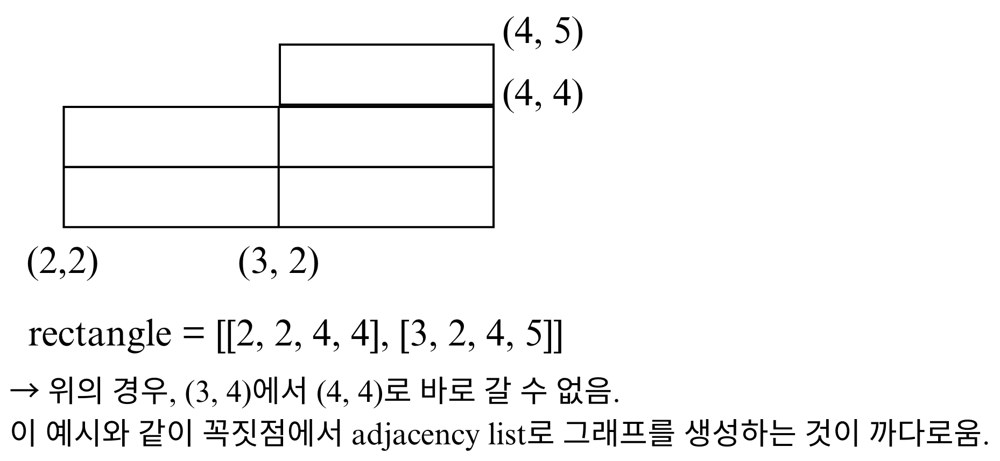
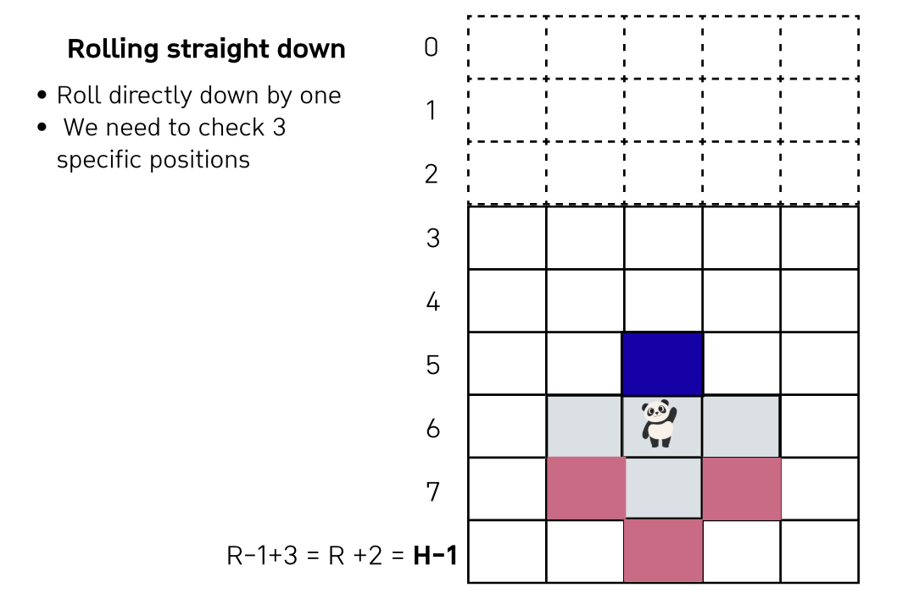
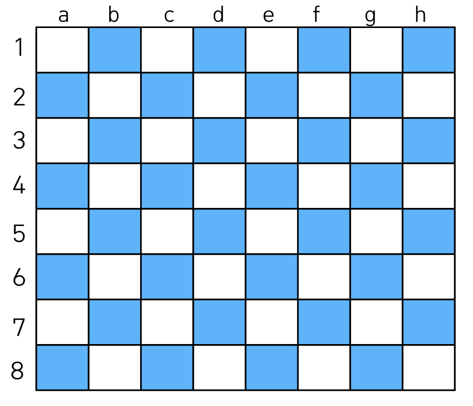
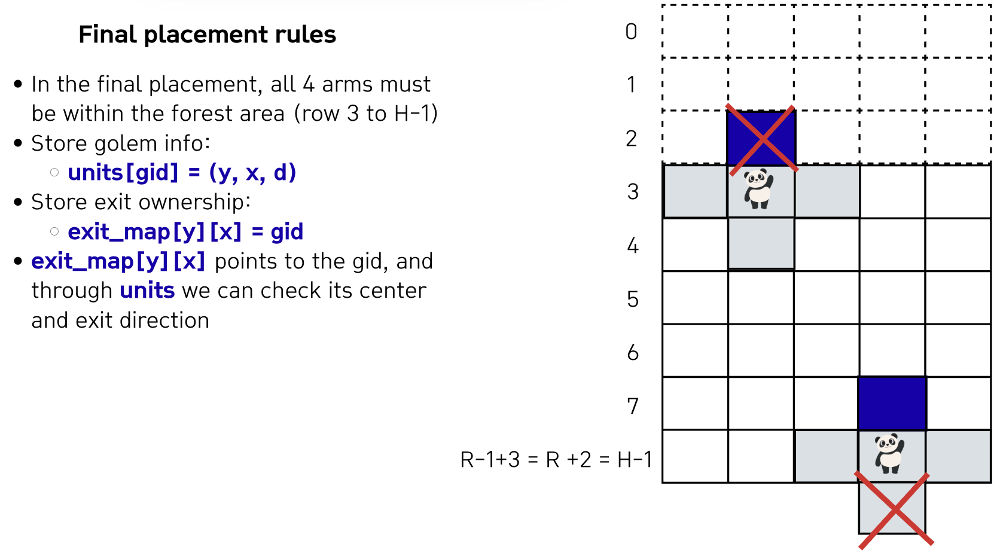
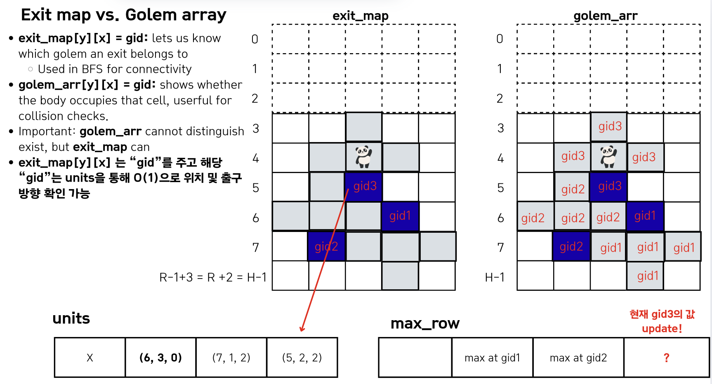
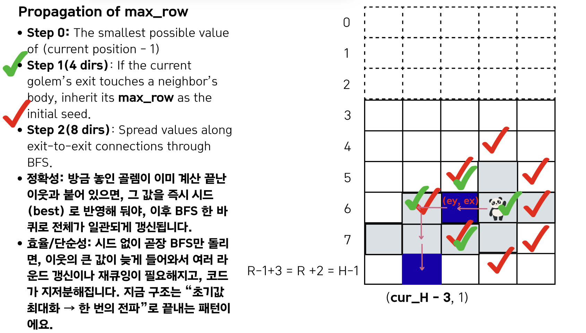
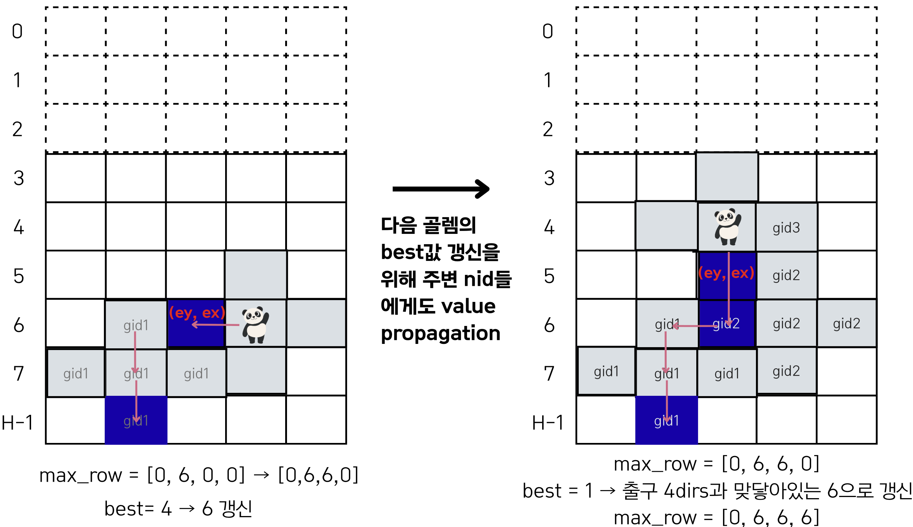
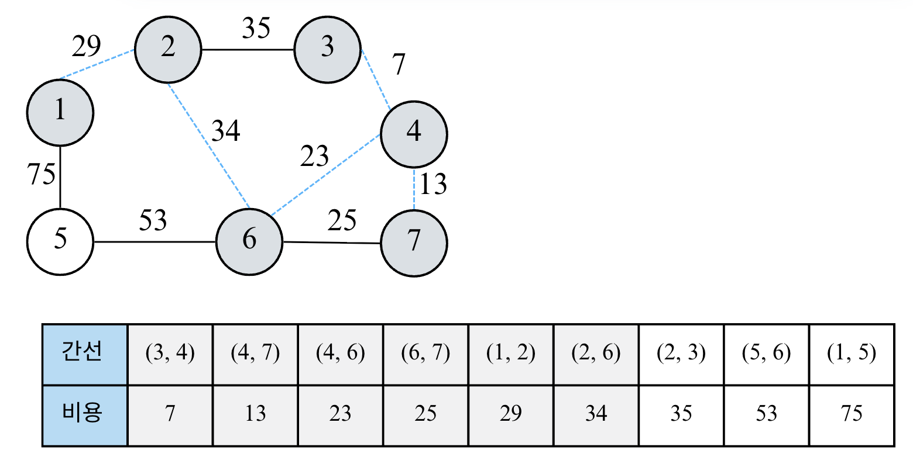

Lecture 2-2. DFS/BFS 실습#
예시 문제 링크
BFS 고득점 Kit
BFS
BFS 고득점 Kit#
타겟 넘버#
Explanation
n개의 음이 아닌 정수 순서를 바꾸지 않고 적절히 더하거나 빼서 타겟 넘버를 만들려고 한다.
parameters:
numbers: 사용할 수 있는 숫자가 담긴 배열 2 <= numbers.length <= 20
target: 타겟넘버 1<= target <= 1000
return:
타겟 넘버를 만드는 방법의 수를 반환
DFS를 사용하면 branch = 2, depth =N개라, 최악의 경우 2^20개
Solution
def solution(numbers, target):
def dfs(depth: int, total: int):
nonlocal answer
# termination
if depth == n:
if total == target:
answer += 1
return
# branch + / -
dfs(depth+1, total+numbers[depth])
dfs(depth+1, total - numbers[depth])
answer = 0
n = len(numbers)
dfs(0, 0)
return answer
# numbers = [1, 1, 1, 1, 1]; target=3 # 5
numbers = [4, 1, 2, 1]; target=4 # 2
print(solution(numbers, target))
네트워크#
Solution
union-find 구조를 이용해 풀이
def find(a):
global parent
if parent[a] == a:
return a
parent[a] = find(parent[a]) # path compression
return parent[a]
def union(a, b):
global rank
rootA = find(a); rootB = find(b)
if rootA == rootB:
return False
if rank[rootA] == rank[rootB]:
parent[rootB] = rootA
rank[rootA] += 1
elif rank[rootA] > rank[rootB]:
parent[rootB] = rootA
else:
parent[rootA] = rootB
return True
def solution(n, computers):
global parent, rank, GroupCnt
GroupCnt = n
parent = [idx for idx in range(n)]
rank = [0] * n # height
for node in range(n):
for end_node in range(node+1, n):
if computers[node][end_node] == 0:
continue
else: # 연결되어 있고
if union(node, end_node):
GroupCnt -= 1
return GroupCnt
게임 맵 최단 거리#
Solution
from collections import deque
def solution(maps):
N = len(maps); M = len(maps[0])
def in_range(y, x):
nonlocal N, M
return 0<=y<N and 0<=x<M
DY = [-1, 1, 0, 0]; DX = [0, 0, -1, 1]
visited = [[False]*M for _ in range(N)]
start_y = 0; start_x = 0
target_y = N-1; target_x = M-1
q = deque([(start_y, start_x, 1)]) # y, x, dis
# BFS
while q:
cur_y, cur_x, cur_dis = q.popleft()
# Early Stopping
if cur_y == target_y and cur_x == target_x:
return cur_dis
for t in range(4):
nxt_y = cur_y + DY[t]
nxt_x = cur_x + DX[t]
if in_range(nxt_y, nxt_x) and maps[nxt_y][nxt_x] == 1 and not visited[nxt_y][nxt_x]:
visited[nxt_y][nxt_x] = True
q.append((nxt_y, nxt_x, cur_dis + 1 ))
return -1 # 위에서 도달하지 못한 경우 -1를 return
# maps= [[1,0,1,1,1],[1,0,1,0,1],[1,0,1,1,1],[1,1,1,0,1],[0,0,0,0,1]] # 11
maps= [[1,0,1,1,1],[1,0,1,0,1],[1,0,1,1,1],[1,1,1,0,0],[0,0,0,0,1]] # -1
print(solution(maps))
단어 변환#
“변환 단계 최소 / 간선 개수 최소 / 최소 횟수” → 무조건 BFS 떠올리는 습관
Idea
parameters:
두 개의 단어 begin, target
두 단어는 같지 않다.
단어의 집합
words, 3 <= words.length <= 50, 각 단어 3 <= str.length <= 10
아래의 규칙을 이용하여 begin -> target 변환하는 가장 짧은 변환 과정을 찾으려고 한다.
한 번에 한 개의 알파벳만 바꿀 수 있음
words에 있는 단어로만 변환할 수 있음 (target도words안에 있어야 함.)
예를 들어, beging이 “hit”이고 target이 “cog”, words = [“hot”, “dot”, “dog”, “lot”, “log”, “cog”]라면 “hit” -> “hot” -> “dot” -> “dog” -> “cog”와 같이 4단계를 거쳐 변환할 수 있다.
return:
“최소” 몇 단계의 과정을 거쳐 begin을 target으로 변환할 수 있는 지 return 하도록 solution함수를 작성해주세요.
변환할 수 없을 때 0을 반환
Idea:
문제에서 “최솟값”을 계산하라고 했으니까, BFS로 접근해보면, 각 단어들을 node로 설정하고
하나의 char만 다른 값들만 edge 연결시킨다.
그리고 begin노드에서 target 노드까지 연결된 최소 거리를 측정하면 된다. (shortest path)
Solution
from heapq import heappush, heappop
MAX = int(1e10)
def is_one_different(word1: str, word2: str) -> bool:
cnt = 0
if len(word1) != len(word2):
return False
for idx in range(len(word1)):
if word1[idx] != word2[idx]:
cnt += 1
if cnt >= 2:
return False
return True
def dijkstra(start_node, target_node):
global shortest_path
shortest_path[start_node] = 0
pq = [(0, 0)]
# (E+V) log(V)
while pq:
cur_dis, cur_node = heappop(pq) # VlogV
if cur_dis > shortest_path[cur_node]:
continue
if cur_node == target_node:
return
# Elog(V)
for nxt_node in graph[cur_node]:
nxt_dis = cur_dis + 1
if nxt_dis < shortest_path[nxt_node]:
shortest_path[nxt_node] = nxt_dis
heappush(pq, (nxt_dis, nxt_node))
def solution(begin, target, words):
global graph, shortest_path
if target not in words:
return 0
n = len(words) + 1 # words에 있는 단어들 + begin 단어
graph = [[] for _ in range(n)]
# graph INIT ~ O(N^2)
for idx, word in enumerate(words):
if is_one_different(begin, word):
graph[0].append(idx+1) # words안에 있는 단어들은 index +1 (begin이 1증가)
graph[idx+1].append(0)
if word == target:
target_id = idx + 1
for j in range(idx+1, len(words)):
if is_one_different(word, words[j]):
graph[idx+1].append(j+1)
graph[j+1].append(idx+1)
# ~ O(ElogN)
shortest_path = [MAX] * n
dijkstra(0, target_id)
return shortest_path[target_id] if shortest_path[target_id] != MAX else 0
# begin = "hit"; target="cog"; words = ["hot", "dot", "dog", "lot", "log", "cog"] # 4
begin = "hit"; target="cog"; words = ["hot", "dot", "dog", "lot", "log"] # 0
print(solution(begin, target, words))
아이템 줍기#
Idea
이 문제는 그래프를 직접 adjacency list로 그리려고 하면 괴로워진다. 애초에 “정점-간선 그래프”가 아닌 격자 (grid) + BFS로 생각하는게 훨씬 편하다.

위의 상황에서 아래처럼 좌표를 2배로 만들면, 모서리와 안쪽 칸이 분리되어 테두리만 정확히 따라갈 수 있게 된다.

좌표를 2배로 키운다.
이유: 직사각형들이 꼭짓점만 닿을 때, 대각선으로 잘못 돌아가는 길을 막기 위해
좌표를 2배로 만들면 “모서리”들이 모두 칸 사이에 생겨서, 테두리만 정확히 따라갈 수 있음
직사각형들로 2D 맵을 만든다.
처음에는 직사각형 전체 영역을 1(지나갈 수 있음)으로 채운다.
그 다음, 직사각형 내부 (테두리 제외)는 0 (못지나감)으로 채운다.
이렇게 하면 딱 ‘테두리’만 1로 남음 -> 우리가 갈 수 있는 길은 이 1인 칸들
캐릭터 위치에서 아이템 위치까지 BFS
시작점, 도착점 좌표도 2배로
상/하/좌/우 네 방향으로만 이동
1인 칸만 이동 가능
BFS에서 (처음 아이템에 도달했을 때 거리 /2) 가 정답
왜 이렇게 하면 효율적인가?
좌표가 최대 50이라서, 2배를 해도 최대 100 × 100 정도 격자.
BFS 한 번 돌려도 O(100 * 100) 정도 → 충분히 빠름.
직사각형 개수도 많지 않아서, 전체 채우는 것도 O(rectangle 수 * 100 * 100) 이하.
그래프의 인접 리스트를 만들 필요 없이, 그냥 2D 배열 + BFS로 끝낼 수 있어서 코드도 훨씬 깔끔해.
Solution
한가지 짚을 점은, 아래 구현에서 range체크를 할 때, 0<=nx<=MAX로 2<=nx<=MAX를 사용하지 않았다. x와 y의 범위는 원래 1<= x, y<=50인데, 이처럼 하는 이유는, graph의 유효 인덱스 범위는 행/열 인덱스: 0~101이기 때문이다.
왜냐하면, grahp[0][..], graph[1][..]은 이미 0인 상태이며 뒤의 range는 넉넉히 해두고 실제 갈 수 있는 상태는 graph[0][..], graph[1][..]의 0/1 상태로 판단하기 때문이다.
from collections import deque
def solution(rectangle, characterX, characterY, itemX, itemY):
# N = 51
# 1. 좌표 2배 스케일링
MAX = 102
graph = [[0] * MAX for _ in range(MAX)]
# (x1, y2) ~ (x2, y2)
# (x1, y1) ~ (x2, y1)
#2-1. 직사각형 전체를 1로 채우기
for x1, y1, x2, y2 in rectangle:
x1 *= 2 ; y1 *= 2 ; x2 *= 2 ; y2 *= 2
# 직사각형 안에는 다 1로 채우기
for y in range(y1, y2+1):
for x in range(x1, x2+1):
graph[x][y] = 1
#2-2. 직사각형 내부는 0으로 지워서 테두리만 남기기
for x1, y1, x2, y2 in rectangle:
x1 *= 2 ; y1 *= 2 ; x2 *= 2 ; y2 *= 2
# 직사각형 안에는 다 1로 채우기
for y in range(y1+1, y2):
for x in range(x1+1, x2):
graph[x][y] = 0
# 3. BFS로 최단 거리 탐색
sx, sy = characterX*2 , characterY*2
ex, ey = itemX*2 , itemY*2
dist = [[-1]*MAX for _ in range(MAX)]
q = deque()
q.append((sx, sy))
dist[sx][sy] = 0
dx = [1, -1, 0, 0]
dy = [0, 0, 1, -1]
while q:
x, y = q.popleft()
# 아이템 위치 도달하면 (2배 스케일링 했으니) 거리 나누기 2
if x == ex and y == ey:
return dist[x][y] // 2
for k in range(4):
nx = x + dx[k]
ny = y + dy[k]
# 맵 범위 확인 + 테두리(1)만 이동 + 미방문
if 0 <= nx <= MAX and 0 <= ny <= MAX:
if graph[nx][ny] == 1 and dist[nx][ny] == -1:
dist[nx][ny] = dist[x][y] + 1
q.append((nx, ny))
# rectangle = [[1,1,7,4],[3,2,5,5],[4,3,6,9],[2,6,8,8]]; s_x = 1; s_y=3; item_x = 7; item_y=8 # 17
# rectangle = [[1,1,8,4],[2,2,4,9],[3,6,9,8],[6,3,7,7]]; s_x = 9; s_y=7; item_x = 6; item_y=1 # 11
# rectangle = [[1,1,5,7]]; s_x = 1; s_y=1; item_x = 4; item_y=7 # 9
# rectangle = [[2,1,7,5],[6,4,10,10]]; s_x = 3; s_y=1; item_x = 7; item_y=10 # 15
rectangle = [[2,2,5,5],[1,3,6,4],[3,1,4,6]]; s_x = 1; s_y=4; item_x = 6; item_y=3 # 10
print(solution(rectangle, s_x, s_y, item_x, item_y))
여행 경로#
BFS#
미생물 연구#
Explanation
미생물 연구
배양 크기 NxN (0, 0) ~ (N, N), 0-indexed , N+1개
0 <= x,y < N (inclusive, exclusive)
좌하단이 (0, 0)이며 (x, y)로 표시
총 Q번의 실험 진행하며 각 실험의 결과를 기록
미생물 투입 (add) ~ O(N) + O(N)
(r1, c1, r2, c2)의 직사각형 여역에 한 무리의 미생물 투입
graph[y][x] = microbe_id 저장한다.
does_id_exist = [True] # id는 1부터 시작하므로, 맨 앞은 [True]로 저장
does_id_exist.append(True)
원래 자리에 다른 미생물이 존재하면 새로 투입된 미생물의 영역 내의 미생물들을 잡아먹는다.
원래 뭐가 있어도 현재 microbe_id로 저장한다.
이때 기존에 있는 미생물 id를
removed_id = set()에 저장해둔다.
즉, 영역 내에는 새로 투입된 미생물만 남게된다.
만약 기존에 있던 어떤 미생물 무리 A가 새로 투입된 미생물 무리 B에게 잡아먹혀서 영역이 2이상으로 나눠진 경우에는, 기존 미생물은 전부 사라진다.
map을 돌면서 해당 미생물 id의 그룹 수가 2이상이면 모두 제거 가능
does_id_exist[id]: list[int]= True/False에서 False 로 저장한다.
X: (아래에서 다시 셀 것임) 만약 그룹 수가 2이상이 아니라면, 기존에 있던
id_to_locs: list[set]의 set에서 id_to_locs[id].remove(locs)로 해당 위치를 지워준다.
–> 위의 문제는 뭐냐면, 기존에 있던 배양용기에서 뭔가가 사라지면, pq안에서 순서가 제대로 된 것이 없어지게 된다. –> 이 때 또 graph를 돌면서 해당 id에 대해 계산해야하기때문에, step 2 (move)에서 한번에 계산하는게 더 편리할 것
배양 용기 이동 (move)
모든 미생물을 새로운 배양 용기로 이동시킴. (NxN)
new_graph를 생성한다. (임시)
기존 배양 용기에 있는 무리 중 가장 차지한 영역이 넓은 무리를 하나 선택 -> 동일한 영역이면, 가장 먼저 투입된 미생물을 선택한다.
Priority queue / sort
기존 graph를 돌면서, (len(locs), id)정보를 저장하고, 이를 pq에 다 넣는다.
새롭게 INIT된 빈 id_to_locs: dict(int, list)
이 과정에서
id_to_locs[id].append()하여 locs 위치 정보를 파악해놓는다.위에서 pq에 바로 넣는 식으로하면, 예전에 pq에 미리 넣어놨던 것에서 미생물의 영역이 작아지는 경우에는 tracking하기가 어려우므로 다시 센다.
list.sort()로 한다.
선택된 미생물 무리를 새 배양 용기에 옮긴다. (new_graph)
이때 무리는 기존 용기에서의 “형태를 유지”해야한다.
해당 무리의 cell 좌표를 모두 가지고 있다가, origin이 바뀌면 그만큼 “평행이동”해준다.
배양 용기의 범위를 벗어나지 않아야 한다.
in_range() 함수
다른 미생물의 영역과 겹치지 않도록 두어야한다.
check(): 해당 id_to_locs[id]에 있는 모든 위치에서 new_graph의 모든 지점이 0이여야함.
위의 조건 안에서 x좌표가 최대한 작은 위치로 미생물을 옮겨야 하며, 그런 위치가 둘 이상이라면 최대한 y좌표가 작은 위치로 오도록 미생물을 옮긴다.
(최대한 ‘좌측하단의 좌표’가 배양 용기의 좌측하단에 오도록 위치)
미생물 id안에서 좌측하단의 좌표를 항상 알고 있는 것이 좋음
같은 x에서는 작은 y : for x (for y)
새로 옮겨진 위치는 (기존 위치 - 좌측하단 위치)
위의 조건을 만족하지 못하여 어떤 곳에도 둘 수 없으면, 새 용기에 옮기지 않고 사라진다.
does_id_exist[id] = False 로 저장
graph = new_graph[:] # 슬라이싱
실험 결과 기록 (record)
미생물 무리 중 상하좌우로 맞닿은 면이 있는 무리끼리는 ‘인접한 무리’
인접한 무리 쌍을 저장한다. (1, 2), (2, 3)
새로 옮겨진 위치에서 인접한지 확인한다. total = 0 pair_set = set() for id in id_to_locs: if does_id_exist[id]: id_to_locs[모든 위치] - lower_bottom_loc[id]의 4방향에 다른 id가 있으면, 인접 graph[dx][dy] != 0 and graph[dx][dy] != id: 인접 if (id1, id2) in pair_set or (id2, id1) in pair_set: continue total += len(id_to_locs[id1]) * len(id_to_locs[id2]) pair_set.add((id1, id2))
모든 ‘인접한 무리’ “쌍” 을 확인한다.
(A,B)와 (B,A)는 같은 쌍임
미생물 A의 영역의 넓이 x 미생물 B의 영역의 넓이만큼의 성과를 얻고 -> 이를 다 “더한” 값 (누적합)을 기록해야한다.
constraints:
2 <= N <= 15
1 <= Q <= 50
필요한 자료구조
graph: 현재 미생물의 위치를 저장한다. graph[y][x] = microbe_id , 아무것도 없으면 0으로 저장 (INIT)does_id_exist: [bool]= does_id_exit[id] = True/False로 저장 해당 미생물 id가 죽었는지 살았는지 체크id_to_locs: dict[int, list]= 미생물들은 삽입되거나 제거되므로 add()뒤에 move()를 시작할 때 항상 계속 갱신id_to_new_graph_origin: dict[int, Tuple[int]]: move()이후에 id마다의 locs 재계산은 time consuming하므로 move()할때 새로 옮긴 origin을 저장해두어, record()때 이웃 미생물 검사시에 사용한다.
Solution
import sys
from collections import deque, defaultdict
from heapq import heappush, heappop
# sys.stdin = open("Input.txt")
input = sys.stdin.readline
def in_range(x, y):
global N
return 0 <= x < N and 0 <= y < N
def BFS(start_x, start_y, cur_id, visited):
global DX, DY
visited.add((start_x, start_y))
q = deque([(start_x, start_y)])
while q:
cur_x, cur_y = q.popleft()
for t in range(4):
nxt_x = cur_x + DX[t]
nxt_y = cur_y + DY[t]
if in_range(nxt_x, nxt_y) and not (nxt_x, nxt_y) in visited:
if graph[nxt_x][nxt_y] == cur_id:
q.append((nxt_x, nxt_y))
visited.add((nxt_x, nxt_y))
def count_group_bfs(cur_id):
global graph
cnt = 0
visited = set()
for y in range(N):
for x in range(N):
if graph[x][y] == cur_id and not (x, y) in visited:
BFS(x, y, cur_id, visited)
cnt +=1
return cnt
def add(r1, c1, r2, c2, id):
global graph, does_id_exist
removed_set = set()
# Step1: 새롭게 투입된 미생물 graph에 삽입
for x in range(r1, r2): # upper right : exclusive
for y in range(c1, c2):
if graph[x][y] != 0:
removed_set.add(graph[x][y])
graph[x][y] = id
does_id_exist.append(True) # 새로운 id있으면 삽입
# lower_bottom_coord[id] = (r1, c1)
# Step 2: 앞선 지워진 기존 미생물의 그룹 수가 2개 이상인지 확인
for is_removed_id in removed_set:
cnt = count_group_bfs(is_removed_id)
# NOTE: 그룹 수가 아예없을 때도 False로 바꾸어주어야한다.
if cnt >= 2 or cnt == 0:
does_id_exist[is_removed_id] = False
# 기존에 있던 location의 정보 다 삭제
def move():
global N, id_to_locs, DX, DY, graph, does_id_exist, id_to_new_graph_origin
new_graph = [[0] * (N) for _ in range(N)]
sort_pq = []
id_to_locs = defaultdict(list) # NOTE: 이전과 헷갈리지 않게 reinit
# Stpe1. 각 id에 대해서 Locs에 대해 조사
visited = set()
for y in range(N):
for x in range(N):
# 현재 아이디 = graph[x][y]에 대해서 방문하지 않았던 것이면
# 또한, add()함수에서 지워진, 미생물에 대해서 다시 0으로 만들지 않았으므로
# does_id_exist[id]에 대해서도 현재 살아있는 것인지 lazy validtaion을 진행한다.
cur_id = graph[x][y]
if cur_id != 0 and (x, y) not in visited and does_id_exist[cur_id]:
# cur_id = graph[x][y]
cnt = 0
q = deque([(x, y)])
visited.add((x, y))
while q:
cur_x, cur_y = q.popleft()
# 새로운 것을 만날 때마다
cnt += 1
# 예전 미생물이 다른 미생물한테 어느 정도 먹혀서 제일 작은 coordinate이 다를 수도 있음.
heappush(id_to_locs[cur_id], (cur_x, cur_y)) # min_heap, x와 y모두
# id_to_locs[id].append((cur_x, cur_y))
for t in range(4):
nxt_x = cur_x + DX[t]
nxt_y = cur_y + DY[t]
if not in_range(nxt_x, nxt_y):
continue
if (nxt_x, nxt_y) not in visited and graph[nxt_x][nxt_y] == cur_id:
visited.add((nxt_x, nxt_y))
q.append((nxt_x, nxt_y))
# 다 돌았으면
heappush(sort_pq, (cnt*-1, cur_id)) # cnt에 대해서는 max heap, cur_id에 대해서 min_heap
# Step2. 미생물을 새로운 배양 용기에 옮김
while sort_pq:
cur_area, cur_id = heappop(sort_pq)
cur_area *= -1
locs = id_to_locs[cur_id]
ref_coord = locs[0]
'''
NOTE: flag, found를 사용할 때, for loop이나 while loop이 여러개 중첩되어 있는 경우,
반드시 "모든 경우의 수"에 대해서 for/while loop이 끝났을 경우, 결과가 어떻게 되는지 확인하여 flag 처리를 각별히 주의해준다.
'''
flag = 0
# x좌표가 제일 작고, 같은 x위치가 2개이면, y의 위치가 작아야한다.
for origin_x in range(N):
for origin_y in range(N):
if new_graph[origin_x][origin_y] != 0:
continue
# 현재 cur_id에 대해 모든 locs에서 미생물을 옮길 수 있는지 확인
dif_x = ref_coord[0] - origin_x
dif_y = ref_coord[1] - origin_y
found = 1
for cur_loc in locs:
new_x = cur_loc[0] - dif_x
new_y = cur_loc[1] - dif_y
# 조건1. 배양 용기의 범위를 벗어나지 않아야 함.
if not in_range(new_x, new_y):
found = 0
break
# 조건 2. 다른 미생물의 영역과 겹치지 않도록 두기
if new_graph[new_x][new_y] != 0:
found = 0
break
# 만약 위의 모든 locs에 대해서 만족하였더라면, 옮길 수 있음
if found:
id_to_new_graph_origin[cur_id] = (origin_x, origin_y)
for cur_loc in locs:
new_x = cur_loc[0] - dif_x
new_y = cur_loc[1] - dif_y
new_graph[new_x][new_y] = cur_id
flag = 1 # default로 0으로 해놓고 찾았을 때만 1로 해야함. 만약 default로 1 해놓으면, 아무것도 못찾고 그냥 끝나버림
break # for문 break
# else:
# # 조건을 만족하지 못한 미생물은 사라져야함.
# does_id_exist[cur_id] = False
if flag:
break
if flag == 0:
does_id_exist[cur_id] = False
# Step 3:
graph = new_graph[:]
def record():
global id_to_locs, does_id_exist, id_to_new_graph_origin, DY, DX
total = 0
for id in range(1, len(does_id_exist)):
# 모든 id 에 대하여 인접한 곳에 다른 id 가 있으면,
if does_id_exist[id]:
locs = id_to_locs[id] # move하기 전의 locations
ref_coord = locs[0]
dif_x = ref_coord[0] - id_to_new_graph_origin[id][0]
dif_y = ref_coord[1] - id_to_new_graph_origin[id][1]
pair_set = set()
# 하나의 id에 다른 id가 존재하는 경우
for loc_x, loc_y in locs:
new_x = loc_x - dif_x
new_y = loc_y - dif_y
for t in range(4):
nxt_x = new_x + DX[t]
nxt_y = new_y + DY[t]
if in_range(nxt_x, nxt_y) and graph[nxt_x][nxt_y] != 0:
nxt_id = graph[nxt_x][nxt_y]
if (graph[nxt_x][nxt_y] != id) and (not nxt_id in pair_set):
if does_id_exist[nxt_id]:
pair_set.add(nxt_id)
total += len(id_to_locs[id]) * len(id_to_locs[nxt_id])
print(int(total / 2)) # (A, B) 와 (B, A)는 동일하므로 /2 로 나눠줌.
N, Q = map(int, input().rstrip().split())
'''
필요한 자료구조
'''
graph = [[0]*(N) for _ in range(N)]
does_id_exist = [True]
id_to_locs = defaultdict(list) # id_to_locs[id] = [항상 맨 앞에 lower-left loc]
DY = [-1, 1, 0, 0]; DX = [0, 0, -1, 1]
id_to_new_graph_origin = dict()
for id in range(1, Q+1): # microbe_id는 1부터 시작, graph가 0이면 아무것도 없음.
# if id == 4:
# print('a')
r1, c1, r2, c2 = map(int, input().rstrip().split())
add(r1, c1, r2, c2, id)
move()
record()
test case
8 4
2 2 5 6
2 3 5 8
2 0 5 3
1 1 6 6
3 3
0 0 3 2
1 0 3 3
2 2 3 3
8 5
0 0 2 5
1 1 5 6
1 0 3 6
7 7 8 8
2 4 6 7
마법의 숲 탐색#
문제 정리
격좌/좌표: RxC를 HXC로 변환 (O, R-1) -> (0, H-1)까지
move_golem(): 아래로 최대한 내려갈 수 있는 (move as far south as possible) 함수 구현
Step 2-1: rolling downward -> collision check 3 cells
Step 2-2: rotating left while moving downward -> collision check 5 cells
Step 2-3: rotating right while moving downward -> collision check 5 cells
settle_or_reset():
정착 실패: 골렘이 멈췄을 때 십자 5칸 중 한 칸이라도 숲 밖(상단 패딩 포함 관점)이라면, 지금까지 놓인 모든 골렘을 전부 지우고 이번 시도는 0점 처리 후 다음 시도로 넘어간다.
정착 성공 시 배치: 정지 위치에 중심+팔 4칸을 기록하고, 출구 방향도 함께 저장한다(다음 단계 탐색에 필요).
spirits 탐색 (explore)
골렘의 출구와 가까운 골렘을 통해 seed max값을 초기화 -> 8가지 가능한 방향으로 같은 component의 값들에 큰 값 -> 작은 값으로 value propagation(BFS사용)
관련하여
 시드의 최대값 초기화가 중요한 이유 확인
시드의 최대값 초기화가 중요한 이유 확인
solve(): 위의 함수들을 사용하여, input을 받고 결과 출력하는 함수
격자/좌표:
숲은 R×C 격자. 문제 기준으로 가장 위가 1행, 가장 아래가 R행(좌표는 1-based). 정령(골렘)은 북쪽(격자 위쪽) 바깥에서 진입한다.
(구현 팁) 진입·회전 동작을 편하게 처리하려고 상단에 3행을 더 붙인 격자(R+3×C) 로 두고 시뮬레이션하는 전형적인 방식이 많이 쓰인다.
입력 & 골렘 정의 (총 K번)
한 번의 시도마다 열 c(1…C), 출구 방향 d(0:북, 1:동, 2:남, 3:서) 가 주어진다. 골렘은 십자(+) 모양(중심+상하좌우) 으로 5칸을 차지하며, 출구는 중심에서 d 방향으로 인접한 1칸이다.
graph의 확장

In the beginning, the golem may extend up to 3 cells above the forest. To handle this, we add 3 buffer rows at the top of the grid. These buffer rows are not part of the forest but provide enough room for the golem to move and settle safely.
max value of each id
graph를 확장했으므로 (H= R + 3), best는 현재 골렘의 center_y, center_x보다 한 칸 아래인 것 ((cy +1, cx)이 맞으나, 확장된 그래프 전의 index를 사용해야하므로 (cy + 1 -3, cx)이다. 하지만, 1열을 0이 아닌 1로 표시하므로 (cy + 1 -3 +1, cx)로 결국 (cy -1, cx)가 된다.
각 step 구현
When the golem moves one step down, we must check 3 positions below the center: directly underneath, and one cell to the left and right. If all 3 are empty, the golem can move downward without collision. 
Now let’s look at rotation to the left. For the golem to rotate, five specific cells must be empty. Interestingly, the rules allow rotation even if the upper-right or lower-right cells are occupied. We number the directions North, East, South, and West as 0, 1, 2, and 3. Using this, left rotation is simply (d + 3) mod 4, and right rotation is (d + 1) mod 4.

Rotation to the right works symmetrically. Again, five surrounding cells must be empty to allow the move. The concept is the same as left rotation, but we apply the clockwise formula.

When the golem finally stops, all four arms must be inside the forest area, which is from row 3 down to H–1. To manage state, we store each golem’s position and exit direction in units[gid]. We also record which exit belongs to which golem in exit_map. This way, exit_map tells us the gid, and units gives us the exact center and direction. 
정보 저장
We maintain two separate grids: golem_arr and exit_map. The golem array records body occupancy and is used for collision checks. The exit map records only exits, which lets us trace connectivity between golems using BFS. This separation is crucial because body cells and exit cells need to be treated differently.

최댓값 전파 BFS
현재 골렘의 최댓값을 전파하려면, “다른 골렘의 ‘출구‘“와 맞닿아있어야함. 따라서, 현재 골렘 8방에 다른 골렘의 출구가 있는지 출구 일때에만 전파를 해주는 것을 명심!

Finally, let’s look at how we propagate the maximum reachable row.
Step one: if
the current golem’s exittouches a neighbor’s body, we inherit itsmax_rowas theseedvalue.Step two: using BFS, we spread values along exit-to-exit connections across the whole component.
This two-step design ensures accuracy — newly placed golems immediately get the correct value. It also improves efficiency, since we avoid repeated updates by maximizing early and propagating just once.

best 계산 단계 (시드 확정)
start_id의 출구 주변을 보면서, 이미 숲에 있던 이웃 골렘들이 가지고 있던max_row값 참고방금 들어온 골렘이 가질 수 있는 가장 큰 시작값 (best)를 정함.
전파 단계 (BFS)
이제
start_id가 속한 component전체에 대해, max_row가 작은 이웃 노드들을 best 값으로 끌어올림.이 과정을 통해 같은 컴포넌트 안의 모든 골렘이 최대값을 공유
이렇게 해 두면, 나중에 컴포넌트 안에서 어느 골렘을 시작점으로 잡아도 같은 답을 얻을 수 있습니다.
다음 골렘을 위해 준비 완료
Solution
import sys
sys.stdin = open('Input.txt', 'r')
from collections import deque
R, C, K = map(int, input().split())
H = R + 3
graph = [[0] * C for _ in range(H)]
id_to_center_dir = dict()
'''
숲의 바깥방향에서 시작해 골렘의 중아이 c열이 되도록 하는 위치에서 내려옴.
1) 남쪽 2) 서쪽 rotation + 아래 한 칸 3) 동쪽 rotation + 아래 한칸
---> 가장 남쪽 도달 후에는 정령은 골렘 내에서 상하좌우 인접칸으로 이동 가능
---> 최종에서 골렘의 몸 일부가 여전히 숲을 벗어난 상태라면 모든 골렘 삭제 및 새롭게 숲 탐색 -> 이 경우 최종 위치를 답에 포함시키지 않음.
---> 골렘의 출구가 다른 골렘과 인접하다면 해당 출구를 통해 다른 골렘으로 이동 가능
----> 정령이 도달하게 되는 최종 위치 누적
정령은 어떤 방향에서든 골렘에 탑승 가능, 내릴 때에는 정해진 출구를 통해서만 내릴 수 있음.
'''
# 북, 동, 남 ,서
AY = [-1, 0, 1, 0]; AX = [0, 1, 0, -1]
DY = [1, 2, 1]; DX = [-1, 0, 1]
LY = [-1, 0, 1, 1, 2]; LX = [-1, -2, -2, -1,-1]
RY = [-1, 0, 1 ,1, 2]; RX = [1, 2, 1, 2, 1]
max_values = [0] * (K+1)
def in_range(y, x):
return 0<=y <H and 0<=x < C
def in_forest(y, x):
return 3 <= y < H and 0<=x < C
def can_move(cur_y, cur_x, DIR_Y, DIR_X):
for dt_y, dt_x in zip(DIR_Y, DIR_X):
ny = cur_y + dt_y
nx = cur_x + dt_x
if not in_range(ny, nx) or graph[ny][nx] != 0:
return False
return True
def place(center_y, center_x, dir):
y = center_y; x = center_x
while True:
if can_move(y, x, DY, DX): # 아래
y += 1
continue
if can_move(y, x, LY, LX): # 왼쪽 아래
y += 1; x -= 1
dir = (dir +3)%4
continue
if can_move(y, x, RY, RX): # 오른쪽 아래
y += 1; x += 1
dir = (dir+1)%4
continue
# 위의 3가지 경우로 못가는 경우 멈춤
break
return y, x, dir
def reset_or_settle(cy, cx, dir, spirit_id):
global id_to_center_dir
# reset
for t in range(4):
ny = cy + AY[t]; nx = cx + AX[t]
if not in_forest(ny, nx):
# reset :graph and id_to_center_dir
for y in range(H):
for x in range(C):
graph[y][x] = 0
id_to_center_dir = dict()
return False
# settle
graph[cy][cx] = spirit_id
for t in range(4):
ay = cy + AY[t]; ax = cx + AX[t]
graph[ay][ax] = spirit_id
# id_to_center_dict update
id_to_center_dir[spirit_id] = (cy, cx, dir)
return True
def exit_cell(id_):
cy, cx, cd = id_to_center_dir[id_]
return cy + AY[cd], cx + AX[cd]
def calculate(id):
# 현재 위치 Max값 구하기
cy = id_to_center_dir[id][0]
cx = id_to_center_dir[id][1]
c_dir = id_to_center_dir[id][2]
# exit
ey = cy + AY[c_dir]
ex = cx + AX[c_dir]
best = cy + 1 - 2 # 현재 위치에서 골렘 아래 팔로 내려가는 것 - 2(원래 map에서의 column값)이 가장 큰 값
# 현재 골렘의 출구와 연결되어 있는 골렘들의 max값으로 update
# 이미 다른 골렘들은 연결되어 있는 골렘들이 가진 max값으로 update되어 있기 때문에 출구에서 4 방향을 보는 것만으로 충분함.
for t in range(4):
ny = ey + AY[t]
nx = ex + AX[t]
if in_forest(ny, nx) and graph[ny][nx] != 0 and graph[ny][nx] != id:
best = max(best, max_values[graph[ny][nx]])
# 현재 H 행이므로 H = R + 3 인데, 첫 행을 1부터 시작하므로 -3 + 1 해서 -2
max_values[id] = best
# propagate
# 현재 골렘 옆에 있는 골렘 값들도 max 값으로 update해주기
# 8방향에서 내 쪽으로 들어올 수 있기 때문에, "옆에 출구가 있는 것들에 한해" 업데이트 해주기?!
# 연결되어 있지 않은 골렘들이 현재 id에 내려온 골렘때문에 연결될 수 있으므로 propagation
Neighbor_Y = [-2, -1, -1, 0, 0, 1, 1, 2]
Neighbor_X = [0, -1, 1, -2, 2, -1, 1, 0]
# BFS
q = deque([(cy, cx, id)]) # center y, x값을 넣어야함.
visited = set()
visited.add(id)
while q:
y, x, cur_id = q.popleft()
for t in range(8):
ny = y + Neighbor_Y[t]; nx = x + Neighbor_X[t]
if in_forest(ny, nx) and graph[ny][nx] != 0 and graph[ny][nx] != cur_id:
# 현재 위치가 다른 골렘의 출구인 경우만, propgate
if exit_cell(graph[ny][nx]) == (ny, nx):
n_id = graph[ny][nx]
if not n_id in visited:
visited.add(n_id)
# update
max_values[n_id] = max(max_values[n_id], best)
q.append((id_to_center_dir[n_id][0], id_to_center_dir[n_id][1], n_id)) # center 값 update
def solve():
total = 0
for spirit_id in range(1, K+1):
c, d = map(int, input().split())
# print(f"from {c-1} column")
y = 1 ; x = c -1
# place, # 현재 골렘안의 정령이 최대로 갈 수 있는 위치 구하기
cur_y, cur_x, cur_dir = place(y, x, d)
# forest밖이면 reset, 아니면 graph및 id_to_center_dirs에 표시
if not reset_or_settle(cur_y, cur_x, cur_dir, spirit_id):
# print(f"max y of {spirit_id}: ignore")
# for row in graph:
# print(row[:])
continue
calculate(spirit_id)
# print(f"max y of {spirit_id}: {max_values[spirit_id]}")
# for row in graph:
# print(row[:])
total += max_values[spirit_id]
print(total)
if __name__ == "__main__":
solve()
블록 이동하기#
갈 수 있는 방향 설정
아래처럼 길이 나있는 경우가 있을 수 있으므로, 직선으로 움직이는 경우 상하좌우, 회전도 robot의 pivot block 기준으로 가로로 위치한 경우에는 위아래 혹은 세로로 위치한 경우에는 상하로 회전할 수 있도록 해야한다.

물체가 2개의 셀 이상 차지하는 경우, 효율적 visited 정보 저장 및 normalization
물체가 차지하는 셀이 1개가 아닌 두개 이기때문에 아래 2가지를 고려해야한다.
Visited: 물체 (Robot)이 차지하는 셀이 한 개 초과 즉, 이경우에는 board에 표시하면 memory가 초과되기 때문에 visited={} set으로 방문 여부를 체크해주면 좋다.
Normalization: 상태 정규화(순서 고정)도 존재해야한다. 즉, (y,x,t,v)와 (t,v,y,x)는 같은 로봇 상태인데, visited가 다르게 취급해 중복 상태 폭증하며 시간도 초과된다. 매번 (a,b) 두 좌표를 정렬해서 (small,big)로 저장하거나, frozenset({pos1,pos2})로 관리해야 한다. 즉, 정규화를 통해 (P1, P2) 중 작은 것이 앞에 오도록하여 같은 위치에 있는 로봇의 상태 체크를 잘 할 수 있게 된다.

When we run BFS, each robot state is represented as the positions of its two blocks and the current time. But we need consistency: which block should be stored first? To avoid duplicates, we always order the two coordinates so that the smaller one comes first. This normalization guarantees that the same robot configuration is stored uniquely in the queue.
물체의 rotation 및 예상 결과 확인
If the robot is lying horizontally, we can rotate it around either the left block or the right block. Each rotation can go both upward and downward, converting the robot into a vertical orientation. So, in total, we get four possible rotations in this situation.

During rotation, we must check not only the pivot block but also the adjacent cells that the robot sweeps through.
If the pivot is the right block, the non-pivot’s upper and lower cells must be empty.
If the pivot is the left block, again the non-pivot’s upper and lower cells must also be empty. These checks prevent collisions during rotation.

After rotation, the final state is defined by the pivot block plus the new block either above or below it. For example, rotating upward results in the pivot plus the cell above it. Rotating downward results in the pivot plus the cell below it. This ensures that we represent the robot’s new vertical position consistently.

# [Left pivot rotation ↑]
# Pivot → (y1, x1)
# After move → {(y1, x1), (y1-1, x1)}
# Must check → (y2-1, x2)
# [Right pivot rotation ↑]
# Pivot → (y2, x2)
# After move → {(y2-1, x2), (y2, x2)}
# Must check → (y1-1, x1)
After rotation, the final state is defined by the pivot block plus the new block either above or below it. For example, rotating upward results in the pivot plus the cell above it. Rotating downward results in the pivot plus the cell below it. This ensures that we represent the robot’s new vertical position consistently.

When the robot is vertical, the situation is symmetric. The pivot can be either the top block or the bottom block. Each pivot allows a rotation to the left or to the right, changing the robot’s orientation from vertical to horizontal.

As in the horizontal case, rotation requires collision checks. If the pivot is the bottom block and we rotate left, the non-pivot’s left cell must be empty. If we rotate right, the non-pivot’s right cell must be empty. Similarly, when the pivot is the top block, we check the left and right cells of the non-pivot during rotation. These rules guarantee that rotations happen without intersecting obstacles.

After a vertical rotation, the final state is also described by the pivot plus one adjacent cell. Rotating left results in the pivot plus its left neighbor. Rotating right results in the pivot plus its right neighbor. This completes the transition from vertical to horizontal while preserving a consistent representation.
Complexity
By exploring the state space, we obtain a complexity of \(O(N^2)\). The grid size is \(N \times N\), and the robot can place one of its ends on any cell. This gives \(O(N^2)\) possibilities. Since the robot can exist in two orientations—horizontal and vertical—each cell has two possible states. Therefore, the total number of states is approximately \(O(2 \times N^2)\), which simplifies to \(O(N^2)\).
In addition, the number of possible actions from each state is constant: 8 moves in total (4 parallel moves in the four directions, plus 4 rotations — 2 pivots × 2 rotation directions). Thus, each state expands in \(O(1)\).
Consequently, the overall time complexity is \(O(N^2)\), and the space complexity is also \(O(N^2)\).
"""
제한사항
5 <= N <= 100
BFS -> O(NxN), 각 칸에 대해 2가지 방향, 각 상태에서 상수개 액션
# 장애물이 있으면 왼쪽/위쪽으로 돌아가야하므로 4방향 모두 탐색해야함.
# 회전도 양방향 회전 전부 고려해야함.
"""
from collections import deque
def solution(board):
n = len(board)
def in_range(y, x):
return 0 <= y < n and 0 <= x < n
def neighbors(p1, p2):
(y1, x1), (y2, x2) = p1, p2
cand = []
# 1) 4방향 평이동
dirs = [(-1,0),(1,0),(0,-1),(0,1)]
for dy, dx in dirs:
ny1, nx1 = y1 + dy, x1 + dx
ny2, nx2 = y2 + dy, x2 + dx
if in_range(ny1, nx1) and in_range(ny2, nx2) \
and board[ny1][nx1] == 0 and board[ny2][nx2] == 0:
cand.append(((ny1, nx1), (ny2, nx2)))
# 2) 회전 (가로 ↔ 세로)
if y1 == y2: # 가로일 때 → 세로로 회전
for d in [-1, 1]: # 위/아래
if in_range(y1 + d, x1) and in_range(y2 + d, x2) \
and board[y1 + d][x1] == 0 and board[y2 + d][x2] == 0:
# 왼쪽 블록 기준 회전
cand.append(((y1, x1), (y1 + d, x1)))
# 오른쪽 블록 기준 회전
cand.append(((y2, x2), (y2 + d, x2)))
elif x1 == x2: # 세로일 때 → 가로로 회전
for d in [-1, 1]: # 좌/우
if in_range(y1, x1 + d) and in_range(y2, x2 + d) \
and board[y1][x1 + d] == 0 and board[y2][x2 + d] == 0:
# 위쪽 블록 기준 회전
cand.append(((y1, x1), (y1, x1 + d)))
# 아래쪽 블록 기준 회전
cand.append(((y2, x2), (y2, x2 + d)))
# 상태 정규화 (작은 좌표가 앞으로)
norm = []
for a, b in cand:
if a <= b:
norm.append((a, b))
else:
norm.append((b, a))
return norm
# 3) BFS 시작
start = ((0, 0), (0, 1)) # 시작 상태
q = deque([(start, 0)])
visited = {start} # visited도 graph위에 체크하는 것이 아닌, Set으로 관리하여 메모리 효율적으로 관리
goal = (n - 1, n - 1)
while q:
(p1, p2), t = q.popleft()
if p1 == goal or p2 == goal:
return t
for nxt in neighbors(p1, p2):
if nxt not in visited:
visited.add(nxt)
q.append((nxt, t + 1))
return -1 # 도달 불가
if __name__ == '__main__':
board = [[0, 0, 0, 1, 1],
[0, 0, 0, 1, 0],
[0, 1, 0, 1, 1],
[1, 1, 0, 0, 1],
[0, 0, 0, 0, 0]] # Expected 7
print(solution(board))
board = [[0, 0],
[0, 0]] # Expected 1
print(solution(board))
board = [[0, 0, 0],
[0, 0, 0],
[0, 0, 0]] # Expected 3
print(solution(board))
고대 문명 유적 탐사#
리스트의 복사
리스트의 복사
1차원 리스트 같은 경우에는
[:]로 복사하면 된다.2차원 리스트는 [:]로 복사하면 얕은 복사라서, 내부 행 리스트를 공유하게 된다. 따라서
from copy import deepcopy를 사용하거나list comprehension를 사용하면 된다. 예를 들어 다음 코드와 같이 할 수 있다.
grid = [[1, 2], [3, 4]]
# 깊은 복사
copied = [row[:] for row in grid]
copied[0][0] = 99
print(grid) # [[1, 2], [3, 4]]
print(copied) # [[99, 2], [3, 4]]
Rotation around a center
이번 문제에서는 center가 변화하면서 rotation을 수행해야하기 때문에, 해당 center에서 3x3 rotation을 직접 종이에 적어본 후, 행열이 각각 어떻게 변하는지 예상 결과와 동일한지 하나하나 따져가며 구현해야한다. 말그대로 구현 문제!
즉, 5x5 행렬에서는 총 9개의 센터가 존재하고, 각 센터마다 90 -> 180 -> 270 회전 (27번) 중에서 가장 우선순위가 높은 것만 저장하면 된다. 또한, 각 센터에서 90 회전 다음에 또 90회전을 하면 180도이므로 CW 90도 회전 한 번을 구현해놓으면 코드가 간단해진다.
center가 (1,1)일때 CW 90도 회전 이후 결과

center가 (1,2)일때 CW 90도 회전 이후 결과

center가 (1,3)일때 CW 90도 회전 이후 결과

center가 (2,1)일때 CW 90도 회전 이후 결과

rotation.py degugging file
아래 파일을 따로 만들어서, 실제 로테이션이 잘 되는지 확인하였다. 문제를 풀 때 solve()함수는 다양한 함수들로 이루어져있어, 디버깅이 복잡하다. 따라서, 하나의 함수마다 degugging은 이런 식으로 별도로 output을 출력해서 확인하면 쉬워진다.
def in_circle(y, x, cy, cx):
return cy -1 <= y <= cy + 1 and cx -1 <= x <= cx + 1
def my_function(input) -> int:
N = len(input)
centers = [(1, 1), (1, 2), (1, 3), (2,1), (2,2), (2, 3), (3, 1), (3, 2), (3, 3)]
for cy, cx in centers:
local_graph = [row[:] for row in graph]
previous_local_graph = [row[:] for row in local_graph]
print(f"Original Graph")
for row in local_graph:
print(row)
for rotation_cnt in range(3):
for y in range(N):
for x in range(N):
if not (y==cy and x==cx) and in_circle(y, x, cy, cx):
add_num = cy + cx
x_minus_y = cx - cy
local_graph[y][x] = previous_local_graph[add_num-x][y + x_minus_y] # CW 90도 회전
else:
local_graph[y][x] = previous_local_graph[y][x]
print(f"Center {cy, cx}, CW {90*(rotation_cnt+1)} degree : ")
for row in local_graph:
print(row)
previous_local_graph = [row[:] for row in local_graph]
return local_graph
if __name__ == '__main__':
global graph
graph = [
[1, 2, 3, 10, 11],
[4, 5, 6, 12, 13],
[7, 8, 9, 14, 15],
[16, 17, 18, 19, 20],
[20, 21, 22, 23, 24],
]
result = my_function(graph)
Original Graph
[1, 2, 3, 10, 11]
[4, 5, 6, 12, 13]
[7, 8, 9, 14, 15]
[16, 17, 18, 19, 20]
[20, 21, 22, 23, 24]
Center (1, 1), CW 90 degree :
[7, 4, 1, 10, 11]
[8, 5, 2, 12, 13]
[9, 6, 3, 14, 15]
[16, 17, 18, 19, 20]
[20, 21, 22, 23, 24]
Center (1, 1), CW 180 degree :
[9, 8, 7, 10, 11]
[6, 5, 4, 12, 13]
[3, 2, 1, 14, 15]
[16, 17, 18, 19, 20]
[20, 21, 22, 23, 24]
Center (1, 1), CW 270 degree :
[3, 6, 9, 10, 11]
[2, 5, 8, 12, 13]
[1, 4, 7, 14, 15]
[16, 17, 18, 19, 20]
[20, 21, 22, 23, 24]
Original Graph
[1, 2, 3, 10, 11]
[4, 5, 6, 12, 13]
[7, 8, 9, 14, 15]
[16, 17, 18, 19, 20]
[20, 21, 22, 23, 24]
Center (1, 2), CW 90 degree :
[1, 8, 5, 2, 11]
[4, 9, 6, 3, 13]
[7, 14, 12, 10, 15]
[16, 17, 18, 19, 20]
[20, 21, 22, 23, 24]
Center (1, 2), CW 180 degree :
[1, 14, 9, 8, 11]
[4, 12, 6, 5, 13]
[7, 10, 3, 2, 15]
[16, 17, 18, 19, 20]
[20, 21, 22, 23, 24]
Center (1, 2), CW 270 degree :
[1, 10, 12, 14, 11]
[4, 3, 6, 9, 13]
[7, 2, 5, 8, 15]
[16, 17, 18, 19, 20]
[20, 21, 22, 23, 24]
Original Graph
[1, 2, 3, 10, 11]
[4, 5, 6, 12, 13]
[7, 8, 9, 14, 15]
[16, 17, 18, 19, 20]
[20, 21, 22, 23, 24]
Center (1, 3), CW 90 degree :
[1, 2, 9, 6, 3]
[4, 5, 14, 12, 10]
[7, 8, 15, 13, 11]
[16, 17, 18, 19, 20]
[20, 21, 22, 23, 24]
Center (1, 3), CW 180 degree :
[1, 2, 15, 14, 9]
[4, 5, 13, 12, 6]
[7, 8, 11, 10, 3]
[16, 17, 18, 19, 20]
[20, 21, 22, 23, 24]
Center (1, 3), CW 270 degree :
[1, 2, 11, 13, 15]
[4, 5, 10, 12, 14]
[7, 8, 3, 6, 9]
[16, 17, 18, 19, 20]
[20, 21, 22, 23, 24]
Original Graph
[1, 2, 3, 10, 11]
[4, 5, 6, 12, 13]
[7, 8, 9, 14, 15]
[16, 17, 18, 19, 20]
[20, 21, 22, 23, 24]
Center (2, 1), CW 90 degree :
[1, 2, 3, 10, 11]
[16, 7, 4, 12, 13]
[17, 8, 5, 14, 15]
[18, 9, 6, 19, 20]
[20, 21, 22, 23, 24]
Center (2, 1), CW 180 degree :
[1, 2, 3, 10, 11]
[18, 17, 16, 12, 13]
[9, 8, 7, 14, 15]
[6, 5, 4, 19, 20]
[20, 21, 22, 23, 24]
Center (2, 1), CW 270 degree :
[1, 2, 3, 10, 11]
[6, 9, 18, 12, 13]
[5, 8, 17, 14, 15]
[4, 7, 16, 19, 20]
[20, 21, 22, 23, 24]
Original Graph
[1, 2, 3, 10, 11]
[4, 5, 6, 12, 13]
[7, 8, 9, 14, 15]
[16, 17, 18, 19, 20]
[20, 21, 22, 23, 24]
Center (2, 2), CW 90 degree :
[1, 2, 3, 10, 11]
[4, 17, 8, 5, 13]
[7, 18, 9, 6, 15]
[16, 19, 14, 12, 20]
[20, 21, 22, 23, 24]
Center (2, 2), CW 180 degree :
[1, 2, 3, 10, 11]
[4, 19, 18, 17, 13]
[7, 14, 9, 8, 15]
[16, 12, 6, 5, 20]
[20, 21, 22, 23, 24]
Center (2, 2), CW 270 degree :
[1, 2, 3, 10, 11]
[4, 12, 14, 19, 13]
[7, 6, 9, 18, 15]
[16, 5, 8, 17, 20]
[20, 21, 22, 23, 24]
Original Graph
[1, 2, 3, 10, 11]
[4, 5, 6, 12, 13]
[7, 8, 9, 14, 15]
[16, 17, 18, 19, 20]
[20, 21, 22, 23, 24]
Center (2, 3), CW 90 degree :
[1, 2, 3, 10, 11]
[4, 5, 18, 9, 6]
[7, 8, 19, 14, 12]
[16, 17, 20, 15, 13]
[20, 21, 22, 23, 24]
Center (2, 3), CW 180 degree :
[1, 2, 3, 10, 11]
[4, 5, 20, 19, 18]
[7, 8, 15, 14, 9]
[16, 17, 13, 12, 6]
[20, 21, 22, 23, 24]
Center (2, 3), CW 270 degree :
[1, 2, 3, 10, 11]
[4, 5, 13, 15, 20]
[7, 8, 12, 14, 19]
[16, 17, 6, 9, 18]
[20, 21, 22, 23, 24]
Original Graph
[1, 2, 3, 10, 11]
[4, 5, 6, 12, 13]
[7, 8, 9, 14, 15]
[16, 17, 18, 19, 20]
[20, 21, 22, 23, 24]
Center (3, 1), CW 90 degree :
[1, 2, 3, 10, 11]
[4, 5, 6, 12, 13]
[20, 16, 7, 14, 15]
[21, 17, 8, 19, 20]
[22, 18, 9, 23, 24]
Center (3, 1), CW 180 degree :
[1, 2, 3, 10, 11]
[4, 5, 6, 12, 13]
[22, 21, 20, 14, 15]
[18, 17, 16, 19, 20]
[9, 8, 7, 23, 24]
Center (3, 1), CW 270 degree :
[1, 2, 3, 10, 11]
[4, 5, 6, 12, 13]
[9, 18, 22, 14, 15]
[8, 17, 21, 19, 20]
[7, 16, 20, 23, 24]
Original Graph
[1, 2, 3, 10, 11]
[4, 5, 6, 12, 13]
[7, 8, 9, 14, 15]
[16, 17, 18, 19, 20]
[20, 21, 22, 23, 24]
Center (3, 2), CW 90 degree :
[1, 2, 3, 10, 11]
[4, 5, 6, 12, 13]
[7, 21, 17, 8, 15]
[16, 22, 18, 9, 20]
[20, 23, 19, 14, 24]
Center (3, 2), CW 180 degree :
[1, 2, 3, 10, 11]
[4, 5, 6, 12, 13]
[7, 23, 22, 21, 15]
[16, 19, 18, 17, 20]
[20, 14, 9, 8, 24]
Center (3, 2), CW 270 degree :
[1, 2, 3, 10, 11]
[4, 5, 6, 12, 13]
[7, 14, 19, 23, 15]
[16, 9, 18, 22, 20]
[20, 8, 17, 21, 24]
Original Graph
[1, 2, 3, 10, 11]
[4, 5, 6, 12, 13]
[7, 8, 9, 14, 15]
[16, 17, 18, 19, 20]
[20, 21, 22, 23, 24]
Center (3, 3), CW 90 degree :
[1, 2, 3, 10, 11]
[4, 5, 6, 12, 13]
[7, 8, 22, 18, 9]
[16, 17, 23, 19, 14]
[20, 21, 24, 20, 15]
Center (3, 3), CW 180 degree :
[1, 2, 3, 10, 11]
[4, 5, 6, 12, 13]
[7, 8, 24, 23, 22]
[16, 17, 20, 19, 18]
[20, 21, 15, 14, 9]
Center (3, 3), CW 270 degree :
[1, 2, 3, 10, 11]
[4, 5, 6, 12, 13]
[7, 8, 15, 20, 24]
[16, 17, 14, 19, 23]
[20, 21, 9, 18, 22]
# 5x5중에서 3x3격자 선택 및 회전 CW: 90도, 180도, 270도
# 향상 회전 : 중심좌표를 기준으로 90도 회전
'''
### 탐사 진행: 회전 목표
1)유물 1차 회득 가치 최대화
2) 1)의 방법이 여러개이면, 회전한 각도 중 가장 작은 각도 선택
3) 2)의 방법도 여러가지이면 (회전 중심좌표가 다를 수 있음), 회전 중심 좌표의 열이 가장 작은 구간 선택
4) 열이 같다면 행이 가장 작은 구간 선택
### 유물 1차 획득
- 유물의 가치: 5x5행렬에서 모인 조각의 개수 -> "3개 이상"부터 획득 가능
- 유물이 사라짐.
- 새로들어오는 유물은 유적의 벽면에 써 있는 숫자대로 진행 (row up, column up순으로 채워짐)
- 사용된 숫자다음부터 다음에 사용할 수 있음
#### 유물 연쇄 획득
- 새로운 유물 조각이 생겨난 이후에도 유물이 있으면 조각을 획득하고 없앤후 다시 채움.
- 다만 더 이상 조각이 3개 이상 연결되지 않아 유물이 될 수 없으면 멈춤
#### 탐사 반복
- 탐사 진행 -> 유물 1차 획득 -> 유믈 연쇄 획득 과정까지 1턴이며 총 K번 턴을 돌림.
- 1번의 turn에서 K번 이전에 어떠한 방법을 사용해서라도 유물을 획득할 수 없다면, 모든 탐사는 그 즉시 종료됨.
이 경우 얻을 수 있는 유물이 존재하지 않으므로, 종료되는 턴에 아무 값도 출력하지 않음.
'''
from collections import deque
from typing import List
def solve():
# f = open('/Users/dayelee/Documents/GitHub/mybook/Input.txt', 'r')
K, M = map(int, input().split())
global graph, parts
graph = []
for n in range(5):
graph.append(list(map(int, input().split())))
# 유물조각은 들어온 순서부터 pop
parts = deque(list(map(int, input().split())))
for k in range(K):
total = 0
# Step 1:
# 3x3을 회전: 총 9개 위치를 중심으로 CW 90, 180, 270도 (9 * 3=27)개 중 선택, 유물은 조각 3개 이상 연결
# 유적위치 locs = list(), 유물의 가치 = len(locs),
locs, result_graph = explore()
if len(locs) == 0:
break # 유적의 가치가 없으면 K 턴 전에 stop
total += len(locs) # 유물의 가치 더하기
graph = result_graph[:] # 유적 graph update
# global graph에 유적 위치 Locs에 새로운 조각 update
update_graph(locs)
# global graph에 유물 연쇄 획득 과정
value= get_chained_parts()
total += value
# 공백을 사이에 두고 출력
print(total, end=' ')
def compare(fy, fx, ry, rx):
if fx != rx:
return fx < rx # 열 번호가 작은 순
elif fy != ry:
return fy > ry # 행 번호가 큰 순
return True
def sort_locs(locs: List):
'''
ascending order
'''
N = len(locs)
for f_pointer in range(N):
lowest_pointer = f_pointer
for r_pointer in range(f_pointer+1, N):
if not compare(locs[lowest_pointer][0], locs[lowest_pointer][1], locs[r_pointer][0], locs[r_pointer][1]):
# 저장
lowest_pointer = r_pointer
# swap
if lowest_pointer != f_pointer:
temp = locs[lowest_pointer]
locs[lowest_pointer] = locs[f_pointer]
locs[f_pointer] = temp
def update_graph(locs):
global graph, parts
sort_locs(locs) # call by reference
# 정렬 순서대로 update
for cy, cx in locs:
graph[cy][cx] = parts.popleft()
def in_circle(y, x, cy, cx):
return cy -1 <= y <= cy + 1 and cx -1 <= x <= cx + 1
def explore():
global graph
# 열이 가장 작고 -> 행이 가장 작은 순으로 배열
# centers = [(1, 1), (1, 2), (1, 3), (2,1), (2,2), (2, 3), (3, 1), (3, 2), (3, 3)]
centers = [(1, 1), (2, 1), (3, 1), (1, 2), (2, 2), (3, 2), (1, 3), (2, 3), (3, 3)]
max_value = 0
max_locs = []
min_rotation = 99999999
result_graph =[[0] * 5 for _ in range(5)]
for cy, cx in centers:
local_graph = [row[:] for row in graph]
previous_local_graph = [row[:] for row in local_graph]
# 90, 180, 270 CW rotation
for rotation_cnt in range(3):
# 회전 후의 새로운 graph생성
add_num = cy + cx
x_minus_y = cx - cy
for y in range(5):
for x in range(5):
# if (y!=cy and x!=cx) and in_circle(y, x, cy, cx):
if not (y==cy and x==cx) and in_circle(y, x, cy, cx):
local_graph[y][x] = previous_local_graph[add_num-x][y+x_minus_y] # CW 90도 회전
else:
local_graph[y][x] = previous_local_graph[y][x]
# 이전 rotaed graph update
previous_local_graph = [row[:] for row in local_graph]
# rotation 후 고정된 Graph에서 3개 이상 모여있는 유물의 위치 계산
cur_locs = calculate_values(previous_local_graph)
# locs, rotation_cnt비교
# 각도가 작은 것이 제일 먼저 priority : 각도가 같으면, 열 -> 행 순서대로 이미 적용되어있기 때문에, 가치가 더 클때만 바꾼다.
# 따라서 오직 이전것보다 큰 경우에만 update (같으면 앞의 것으로 함.)
if len(cur_locs) >= max_value: # Step 1: 유물 가치가 가장 높은 것을 최대화
if len(cur_locs) == max_value: # Step 2: Step 1이 여러개라면, 회전 각도가 가장 작은 것
if min_rotation > rotation_cnt:
# update
min_rotation = rotation_cnt
max_value = len(cur_locs)
max_locs = list(cur_locs)
result_graph = [row[:] for row in previous_local_graph]
else:
# update
min_rotation = rotation_cnt
max_value = len(cur_locs)
max_locs = list(cur_locs)
result_graph = [row[:] for row in previous_local_graph]
return max_locs,result_graph
def in_range(y, x):
return 0<=y<5 and 0<=x <5
def BFS(y, x, cur_graph):
q = deque([(y, x)])
visited = set()
visited.add((y, x))
DY = [-1, 1, 0, 0]; DX = [0, 0, 1, -1]
while q:
cur_y, cur_x = q.popleft()
for t in range(4):
ny = cur_y + DY[t]; nx = cur_x + DX[t]
# range안에 있고 & 원래 y, x 안에 있는 수와 옆의 수가 동일한지 & 방문하지는 않았는지
if in_range(ny, nx) and cur_graph[ny][nx] == cur_graph[y][x] and (not (ny, nx) in visited):
q.append((ny, nx))
visited.add((ny,nx))
# 3개 이상인지
if len(visited) >= 3:
return True, visited
else :
return False, None
def calculate_values(cur_graph):
'''
고정된 Graph에서 3개 이상 모여있는 유물의 위치 계산
'''
result = set()
for y in range(5):
for x in range(5):
is_more_three, locs = BFS(y, x, cur_graph)
if is_more_three:
# set을 extend하는 방법?
result = result.union(locs)
return result
def get_chained_parts():
global graph
values = 0
while True:
# 유적 위치 세기
locs = calculate_values(graph)
if len(locs) == 0:
break
values += len(locs)
# 유적 graph 업데이트하기
update_graph(list(locs))
return values
if __name__ == '__main__':
solve()